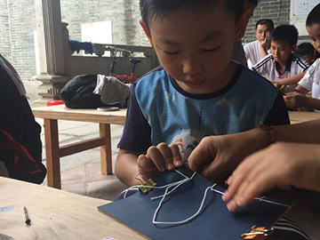

传统木版年画体验
木版年画的历史渊源、木版年画的工艺流程、木版年画的审美特征、木版年画的流派与传承、近代木版年画的变迁等内容。“过年”最早源于殷商时期年头岁尾的祭神祭祖活动，除旧迎新的仪式包括了驱邪纳福的内容振兴传统美德的一个好方法就是借鉴前人的经验，是继承中华民族传统文化的重要举措，也是古为今用的好范例。
查看详情
传统手工皮艺制作文化体验
在城市中心闹中取静，静下心来感受作为手工匠人的乐趣。抚摸感受皮革独特的纹路，近嗅了解天然皮革的特殊气息，拿钢尺细细量度，用沉重的铁质剪刀破开皮质，木槌凿出细孔，穿针引线细致缝，锉刀磨毛修整完美，这不仅对儿童的观察、动手能力有所促进，而且为亲子间的互动创造了良好的空间。
查看详情
传统手艺木版刻画
我国木刻版画艺术从鲁迅先生大力倡导之后就呈现出一种新兴的气象，即从复制版画转变为创作版画，发展至今已经取得巨大成就。版画独特的刀味与木味使它在中国和世界文化艺术史上具有独立的艺术价值与地位。
查看详情

古法装帧之线装书文化体验
中国古代书籍装帧即包括书籍的演变过程亦包括字体的演变过程通过动手制作线装书等生动有趣的形式，让小朋友在了解中国汉字的同时，提高小朋友对文字的敏感度和兴趣，让小朋友喜欢书籍，热爱读书，在亲子互动游戏中激发和培养小朋友的想象力及创造性思维
查看详情
陶艺文化体验
中国人在科学技术上的成果以及对美的追求与塑造，在许多方面都是通过陶瓷制作来体现的。这既是一门与绘画、雕塑、设计高度相关的综合艺术，也兼具公众参与的教育功能，了解传统文化、提升审美情趣、开发艺术潜能、激发创作活力！
查看详情
学习扎花艺术
DIY手工扎花是孩子非常喜欢的项目，对于引导孩子积极思维，大胆创造，培养创造力和想象力有很大作用。并通过手的操作，制作出占有一定空间的、可视的、可触摸的成型作品对于提升他们的自信心和成就感具有很好的作用。
查看详情